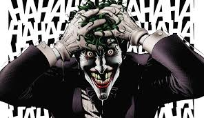

"Batman: A Piada Mortal" é uma das histórias mais famosas e controversas envolvendo o icônico Cavaleiro das Trevas. Escrito por Alan Moore e ilustrado por Brian Bolland, o livro é uma graphic novel publicada pela DC Comics em 1988. Rapidamente, tornou-se uma obra seminal, influenciando diversas outras narrativas do Batman e do universo dos quadrinhos como um todo.
A trama gira em torno do confronto épico entre Batman e seu arqui-inimigo, o Coringa, cujo relacionamento é profundamente explorado neste conto sombrio. A história é notável não apenas por sua narrativa envolvente, mas também pela sua abordagem ousada e provocativa em relação aos personagens e à mitologia do Batman.
"A Piada Mortal" é dividida em duas partes entrelaçadas. A primeira parte explora a origem do Coringa, oferecendo uma possível explicação para a sua transformação de um comediante fracassado em um dos vilões mais perigosos e insanos de Gotham City. Esta parte da história mergulha nas circunstâncias trágicas que levaram à criação do Coringa, incluindo um terrível incidente envolvendo sua esposa grávida.

A segunda parte da história é centrada no presente, com o Coringa escapando do Asilo Arkham e lançando um plano diabólico para provar um ponto: qualquer pessoa pode se tornar como ele, com apenas um dia ruim. Para isso, ele ataca a Comissária Gordon, disparando uma bala que a deixa gravemente ferida e sequestrando-o para submetê-lo a uma série de torturas psicológicas.
Batman é imediatamente atraído para o confronto, e o clímax da história ocorre em um confronto final entre ele e o Coringa em um parque de diversões abandonado. A narrativa culmina em uma cena angustiante e ambígua que desafia as percepções tradicionais sobre a relação entre heróis e vilões.
Além da narrativa principal, "Batman: A Piada Mortal" é conhecido por sua arte visualmente impactante, com ilustrações detalhadas e atmosféricas que ajudam a criar uma atmosfera sombria e perturbadora.
O livro é famoso não apenas por sua qualidade artística, mas também por sua influência duradoura no mundo dos quadrinhos. Ele provocou debates intensos sobre a natureza do Coringa, a ética do Batman e a violência nos quadrinhos. Sua história impactante e suas reviravoltas dramáticas continuam a ressoar com os fãs e críticos até hoje, tornando-se um dos contos mais reverenciados e discutidos do Batman e uma leitura obrigatória para qualquer aficionado por quadrinhos.